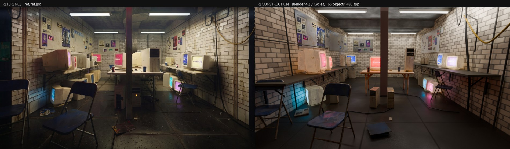
主线 UE 管线的结论里有一句自我批评：
这份文档就是那条闭环线的原型实现。它和 UE 管线是并行关系，不是替代： UE 那条是可交付、可离线复跑的产品管线；这条是回答另一个问题的还原度上限探索 —— 如果允许「渲染 → 度量 → 定位病因 → 改 → 再渲染」无限循环，同一张参考图能被逼到多近。
技术栈也故意不同：全程 Blender + Cycles，零云端调用、零 API Key， 所有数据来自参考图本身与本地 39 模块资产库。因此这条线不存在脱敏问题， 仓库里的实现就是完整实现。
一间脏旧的地下机房：白色刷漆砖墙、墙挂木板架上一排米色 CRT（屏幕发洋红/青/蓝光）、 中央折叠长桌、正中一根暗红钢立柱、前景两把蓝色折叠椅、顶上荧光灯管、 密集海报墙、右墙垂落的黑色缆束与赭黄悬链、湿反光的深色水泥地。
这类任务最容易走的弯路是凭眼睛调：看一眼觉得墙太亮，调暗一点，再看一眼。 问题是人眼对整体亮度极不敏感、对局部错位又极敏感，凭感觉调会在两三轮后开始互相抵消。 所以第一件事不是建模，是先定目标函数。
直觉上 SSIM 该是首选。实际上在这个任务里它几乎不动，而且方向是错的：
所以砖缝的最终值是按振幅定的，不是按 SSIM 定的。SSIM 全程只作为 回归护栏保留（防止某次改动把画面整体搞坏），不作为优化目标。
| 量 | 它回答什么 | 为什么可信 |
|---|---|---|
| 容差边缘 F 分数 | 结构对不对：东西在不在正确位置 | 双向膨胀 5px 后算 IoU，容忍 1–2px 抖动但不容忍错位。全程从 0.260 涨到 0.650 |
| 16 分区曝光/色相表 | 哪里不对、怎么不对 | 按档（stop）报亮度差、报饱和度与圆均值色相，直接指向要改哪盏灯或哪个反射率 |
| 直方图交集 | 影调分布对不对 | 不受空间错位影响，能把「整体太亮」和「局部错位」分开 |
| 逐物体互相关偏移 | 具体哪个物体错位、错多少像素 | 整图指标永远答不了这个问题（详见第 6 节） |
参考图本身的影调目标也是量出来的，用来当配光的靶子：
| 亮度百分位 | 0.1 | 1 | 5 | 25 | 50 | 75 | 95 | 99 | 99.9 |
|---|---|---|---|---|---|---|---|---|---|
| 参考图 | 0.024 | 0.031 | 0.047 | 0.094 | 0.192 | 0.369 | 0.710 | 0.867 | 0.992 |
中位数 0.192、只有 0.51% 的像素超过 0.95（灯管和屏幕芯）、 5.98% 低于 0.05。这才是要打的靶：暗中位 + 长而稀的高光尾， 而不是「整体增益改一改」。
相机错了，后面所有摆放都是在错的投影下拟合，越调越偏。所以先把它锁死。
hfov 95.0° f 469.16 px pitch −10.2° yaw +0.4° roll −0.35°
相机 (0, 0, 1.18) m 房间 3.95 × 7.00 × 2.55 m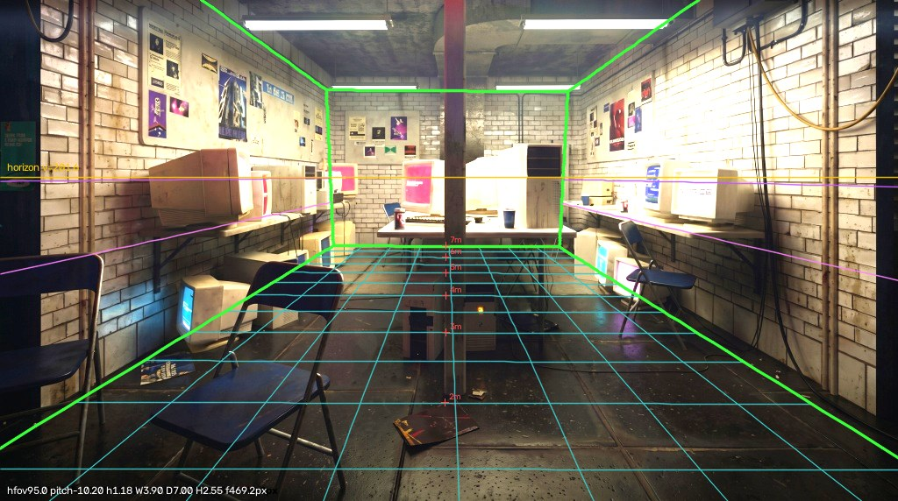
参考图是 AI 生成图，自身透视并不自洽：同一面墙上不同砖缝外推出的消失点 能差 30 像素，即 ±15px 量级的内部不一致。所以追求亚分米级解算是没有意义的， 早点转入「渲染—度量—修」闭环才是对的。这个判断让后面省了很多力气。
常规做法是给每个物体填 3D 坐标。这里换了一种：每个物体记的是 它与支撑面接触的那个像素，加上支撑面的名字。
{"id": "crt_L2", "asset": "M02", "support": "shelf_L",
"anchor_px": [300, 250], "yaw": 88, "note": "左架第二台，粉屏"}由 tools/resolve.py 反投影成米。好处有三个，都在后面兑现了：
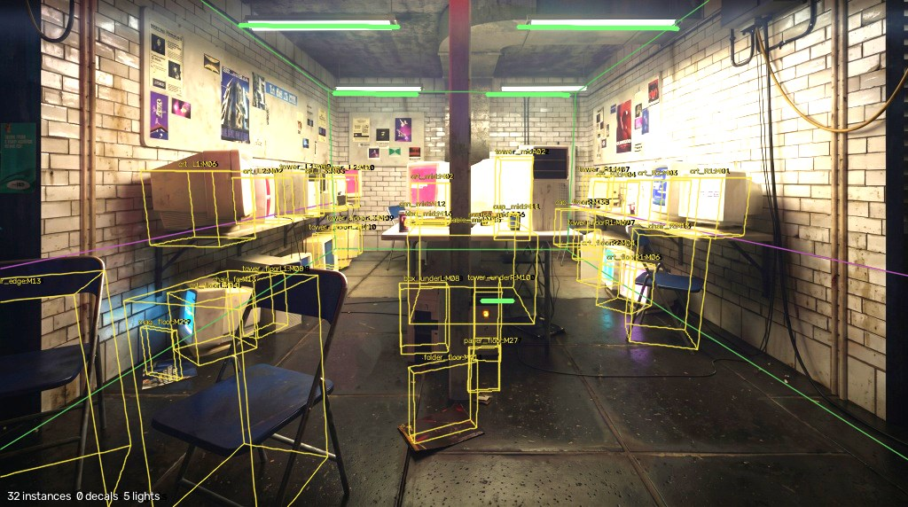
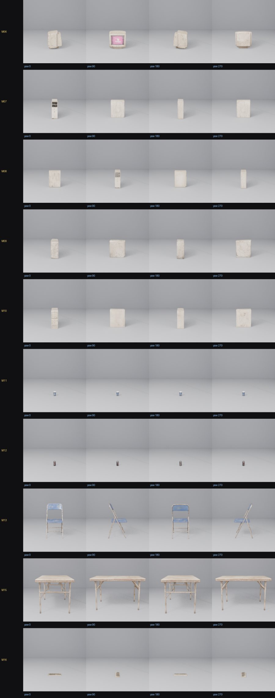
est_size_cm 是 AI 估的，不可信，得自己量。第一版渲染很难看：墙是平灰的、没有海报、没有线缆、屏幕过曝成白块。 但它跑通了 —— spec 驱动、五个模块各自建、相机对齐、出图、量分。 这一步的价值不在画面，在于此后每一个改动都能立刻被量化。
反过来的顺序（先把砖墙材质做精致，再想怎么组装）会让人在无法验证的东西上花掉大半时间。
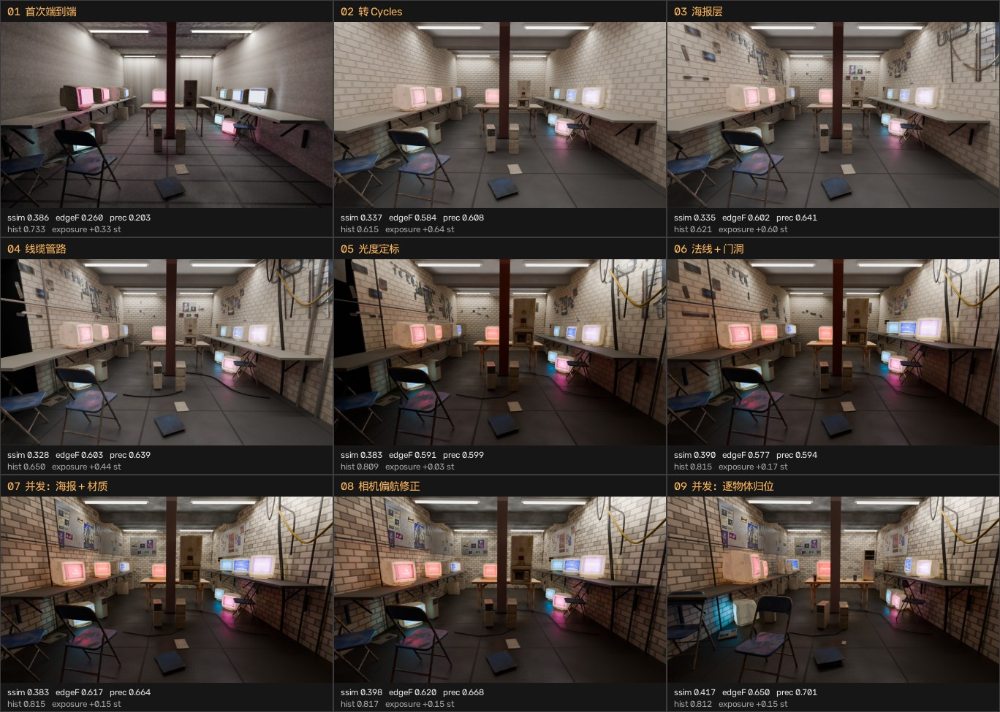
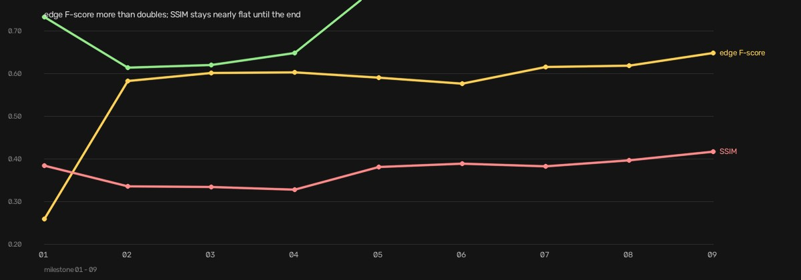
| 步 | 改了什么 | ssim | 边缘F | 曝光 | 这一步真正的收获 |
|---|---|---|---|---|---|
| 01 | 首次端到端：外壳 + 资产 + 灯管 | 0.386 | 0.260 | +0.33 | 闭环通了；砖纹完全没出来（UV 问题） |
| 02 | 转 Cycles；屏幕按纹理饱和度自发光 | 0.337 | 0.584 | +0.64 | 边缘 F 一步 +0.32：结构开始对上 |
| 03 | 海报层：参考图自身海报矫正回贴 | 0.335 | 0.602 | +0.60 | 内容补齐；此时整体还偏亮 0.6 档 |
| 04 | 线缆、管路、地面走线 | 0.328 | 0.603 | +0.44 | 内容先于调色 —— 内容会改变所有分区读数 |
| 05 | 光度定标：按分区表配光与调色 | 0.383 | 0.591 | +0.03 | 曝光基本归零；对比度 0.206 对参考 0.210 |
| 06 | 外壳法线朝内；删掉不该有的门洞 | 0.390 | 0.577 | +0.17 | 单是法线一项就值 +0.005 ssim / +0.012 直方图 |
| 07 | 并发：海报 + 材质两个 owner | 0.383 | 0.617 | +0.15 | 公告板发现（第 7 节）；砖缝按振幅定标 |
| 08 | 相机偏航符号修正 | 0.398 | 0.620 | +0.15 | 全项目单步 ssim 收益最大的一次 |
| 09 | 并发：系统性分量 + 四区域逐物体归位 | 0.417 | 0.650 | +0.15 | 无匹配物体 7 → 4；已对齐 0 → 4 |
| 指标 | 起点 | 终点 | 说明 |
|---|---|---|---|
| 容差边缘 F 分数 | 0.260 | 0.650 | 结构匹配，翻倍以上 |
| 边缘精确率 | 0.203 | 0.701 | 新画出来的边落在参考图的边上 |
| 边缘召回率 | — | 0.605 | |
| 直方图交集 | 0.733 | 0.812 | 峰值曾到 0.817，最后一轮让掉 0.005 |
| 全局曝光误差 | +0.33 档 | +0.15 档 | 中景地面曾是 +1.02，现 +0.17 |
| 亮度标准差（对比度） | 0.201 | 0.215 | 参考图 0.210 |
| 平均绝对误差 | 0.153 | 0.132 | |
| 16 分区误差绝对值之和 | 5.62 档 | 2.44 档 | 最差分区 +1.02 → +0.36 |
| SSIM | 0.386 | 0.417 | 大半程低于起点；不是目标函数 |
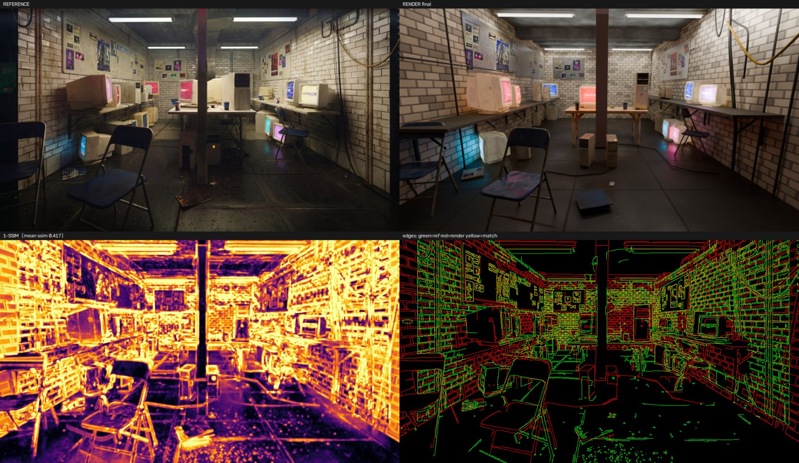
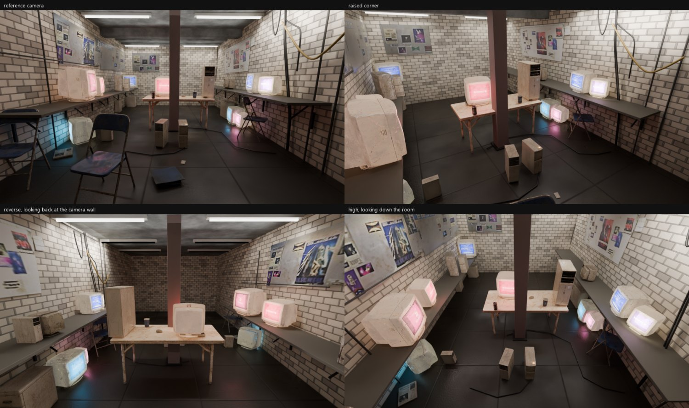
拆并发的难点不是分任务，是让并行的人不互相覆盖。这里用三条约束解决：
每个 owner 只写自己那一份 spec/parts/*.json 片段，
由 tools/merge_parts.py 按实例 id 合并进主 spec。谁都不许直接写
spec/scene.json。片段之间的实例集合互不相交，合并天然无冲突。
python tools/merge_parts.py --resolve --out spec/scene_<tag>.json
blender -b --python build.py -- --spec spec/scene_<tag>.json ...合并时会读所有片段，所以每个人始终看到别人的最新进展， 但各自渲染各自的副本。没有这条，两个 owner 同时跑合并就会互相踩主 spec —— 这是第一次尝试并发时真实存在的隐患。
第 9 步本来打算五个区域一起并发。但当时有一个疑似系统性偏移 （所有物体整体偏移），如果不先定下来，四个区域 owner 会各自把这个系统误差 吸收进自己的坐标里，事后无法拆分。所以改成三阶段流水： 系统性 owner 单独先跑 → 四区域并发 → 整合 owner 合并、渲染、复测、按区域裁决。
整合 owner 的职责不是「把大家的改动合起来」，而是独立复测并有权回滚。 第 7 步的整合者没有采信任何 owner 的自我归因，而是做了 2×2 消融 （老/新材质 × 老/新海报，四次全分辨率渲染）来分离贡献， 并发现材质 owner 的砖缝暗度过冲了 21%（它用的百分位统计量会被缝宽偏置）， 换成对缝宽稳健的统计量重新定标后才放行。
三个 bug 全都是某个数字拒绝改善时才暴露的，不是看图看出来的。 这一点值得单独强调：它们在渲染图上都不显眼。
XYZ 欧拉角符号错。症状是「右侧偏暗 + 左侧偏亮」两个现象，
被当成两个独立问题调了好几轮。永久对策：
modules/lighting.py 现在把每盏灯算出的朝向向量打进 build report，
灯打反了不渲染就能看见。
后方补光照回了相机，所以加上它反而是近处地面变亮、远墙依旧暗。
旋转 plane 拼外壳留下了反向绕序。Cycles 的漫反射两面都着色所以看不出来， 但 Bump 链是按翻转后的法线求值的，掠射面会被压黑。修正后单这一项 +0.005 ssim、+0.012 直方图交集。
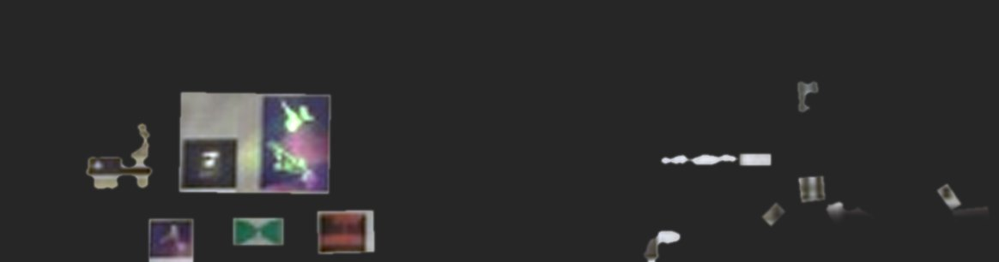
这是海报 owner 在矫正视图里看出来的。按「偏离局部中位数」找海报的像素规则 永远看不见板子 —— 板子本身是均匀的，不会偏离自己的中位数。 这正是后墙分区长期偏亮 0.48 档的真因：那里渲染的是一片裸砖。
这是第 9 步最实质的发现，来自左区 owner。参考图里左架每台 CRT 都是近乎侧视的：
crt_L1 只在 u 272–288 露出 16 px 宽的洋红细条，u 168–270 全是素色米白机壳；
crt_L2 是 u 297–306 的 9 px 红条。而 spec 里的偏航是 4–69° ——
对于 x ≈ −1.7 的显示器，这个角度把屏幕正对着视线。靠左墙架子上的显示器应该朝 +X，
即从这个机位看约 +90…+105°。这一个错误就是 crt_L1 报「无匹配」的原因：
渲染在参考图放素色机壳的地方放了一块正对镜头的粉屏。
而 crt_floorL 恰好反过来：它的青屏在参考图里是朝墙的（约 −52°），
那片朝墙的光正是砖墙 u 150–205 上那块宽青色洗光 —— 之前的实测笔记里已经记着
「这块洗光缺失」，当时没想到病因是朝向。
ASSET_TUNE 高 20–40%，而且这是被几何逼出来的：z = 1.20 只比机位高 0.02 m，
所以 0.78 m 板上一台 0.42 m CRT 的顶点在这面墙上任何纵深都投在 v = 195–199，
而参考图实测顶点在 v = 166–193，要够到 v = 168 顶点得在 z ≈ 1.37。
两个自由度一起错，宽度一项就还是对得上 —— 拟合的观测量太少。
顺带它把 shelf_z_L = 0.78 又验了一次（因为尺寸结论看着可疑）：
板子前上沿在 u 300–410 上贴合实测边缘约 1 px，而 z = 0.90 差 20 px。左架高度是对的。
系统性 owner 用它自己的 A/B 证明了噪声地板：在一次俯仰 A/B 中， 12 个接触像素可证明没有移动的锚定物体，报出的 dy 平均变化了 10.2 px —— 纯粹因为周围渲染内容变了、相关器重新锁定。而且在一排几乎一样的米色 CRT 里， 相关器会锁到邻居身上：crt_R2 报 dx −39、crt_R3 报 dx +33， 那是邻居误配，不是摆放误差。
这三条都曾被我当成缺陷记录下来，后来被测量推翻。保留而不删除， 因为推翻的过程比结论更有用。
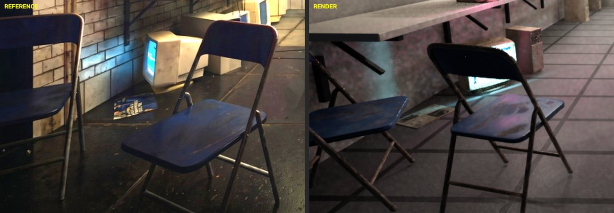
结论：判断来自缩略图而不是测量。撤回。
这个数字来自我自己推的一个「视宽 → 纵深」闭式近似。改用直接投影网格 重解之后，原摆放误差只有 6 px —— 错的是那个近似式，不是摆放。
这条是我作为前提交给 agent 去诊断的，结果它把前提本身推翻了：
chair_edge 占了 57% 的面积权重，
而它的相关搜索窗被画面下缘和左缘裁切，
导致 dy 只可能落在 [−40, 0]。剔掉这一行，加权均值从 −6.3
翻成 +2.6。support:"fixed"
的条目会平移。我却让它去考虑改相机。
后续验证闭合得很干净：区域 owner 实际去修 chair_edge
（它确实近了 0.26 m、偏航错了 108°），修完之后那个「系统性趋势」自己消失了 ——
加权均值 dy 从 −6.3 变成 +2.4。
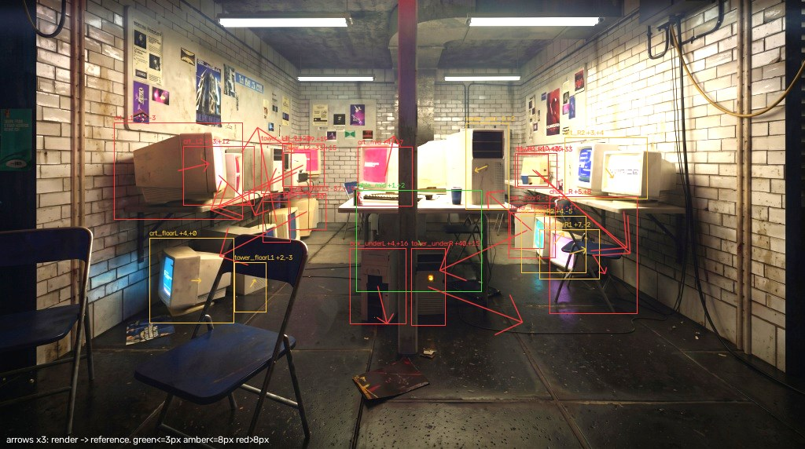
| # | 问题 | 为什么还在 |
|---|---|---|
| 1 | 左墙远端的海报是糊的 | 参考图本身在那段只有 21 px/m 的采样率。矫正不能凭空造出 从未被拍下的细节；换成自己画的海报就不再是「对这张图的重建」了。这是信息上限，不是缺陷。 |
| 2 | 左架分区偏亮 +0.36 档 | 目前 16 个分区里最差的一个。资产自身反射率与背后砖墙想要的值不一致。 |
| 3 | 地面细碎垃圾不足 | 大件都在，程序化颗粒也有，但参考图地面那些一颗颗的碎屑没有逐个摆。 |
| 4 | 折叠椅框是暖铜色 | 参考图里是冷灰钢。这是资产属性，不是配光问题。 |
| 5 | 近景地面色相偏冷 18° | 参考图湿地面拾取的暖反弹比我们多。 |
| 6 | 天花缺少模板纹理 | 我们是斑驳混凝土；参考图有清晰的支模痕迹与污渍条纹。 |
另外记两个仍然存在的越界：cab_floorR 解算到 y = 7.538（后墙在 7.0），
tower_floorR1 到 x = 2.026（半宽 1.975）。都在外壳之外，属于下一轮要收的账。
python tools/bake_wall_layer.py # 从参考图烘出矫正后的海报层
python tools/merge_parts.py --resolve # 片段合并进主 spec 并重解锚点
blender -b --python build.py -- --engine CYCLES --samples 480 \
--out out/render_final.png --save-blend
python tools/compare.py --render out/render_final.png --tag final
python tools/align_check.py --render out/render_final.png --vis
blender -b --python tools/views.py -- --engine CYCLES --samples 140| 工具 | 作用 |
|---|---|
tools/calib.py | LSD + RANSAC 解消失点 |
tools/overlay.py | 房间线框叠回参考图（标定验收） |
tools/place.py | 像素 ↔ 米互转，任意支撑平面 |
tools/resolve.py | 把 anchor_px 反投影成 pos |
tools/spec_overlay.py | 实例包围盒叠回参考图（摆放内循环） |
tools/compare.py | 整图 + 16 分区打分，出四联审查图 |
tools/align_check.py | 逐物体互相关配准，带可信度裁决 |
tools/check_camera.py | 校验渲染相机与投影器一致（60 点，超 3px 报警） |
tools/bake_wall_layer.py | 墙面矫正烘海报层（含公告板） |
tools/probe_pixel.py | 射线追某个像素，报出打到了哪个物体 |
tools/views.py | 换机位渲染，验证是真 3D 场景 |
tools/catalog.py | 资产库四朝向接触表 |
tools/merge_parts.py | 片段合并（支持显式 null 删除键） |